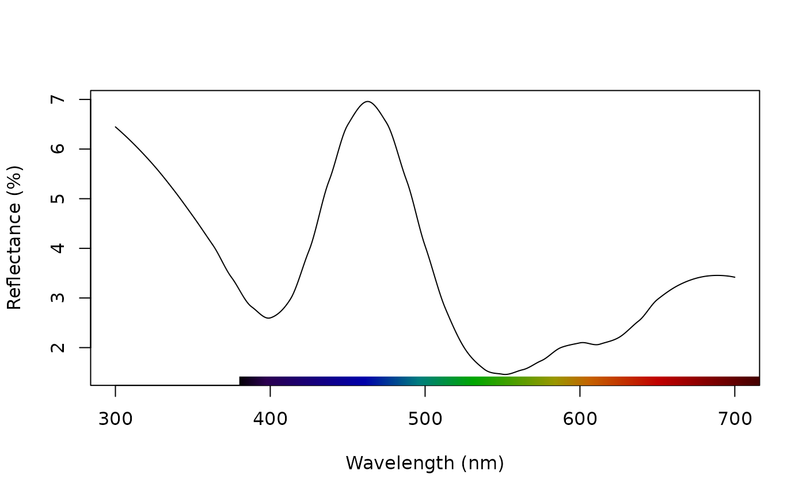
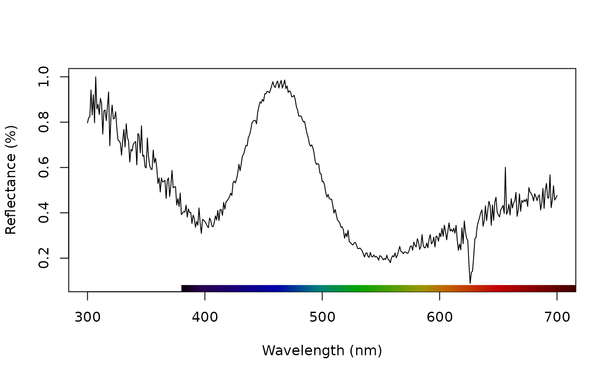
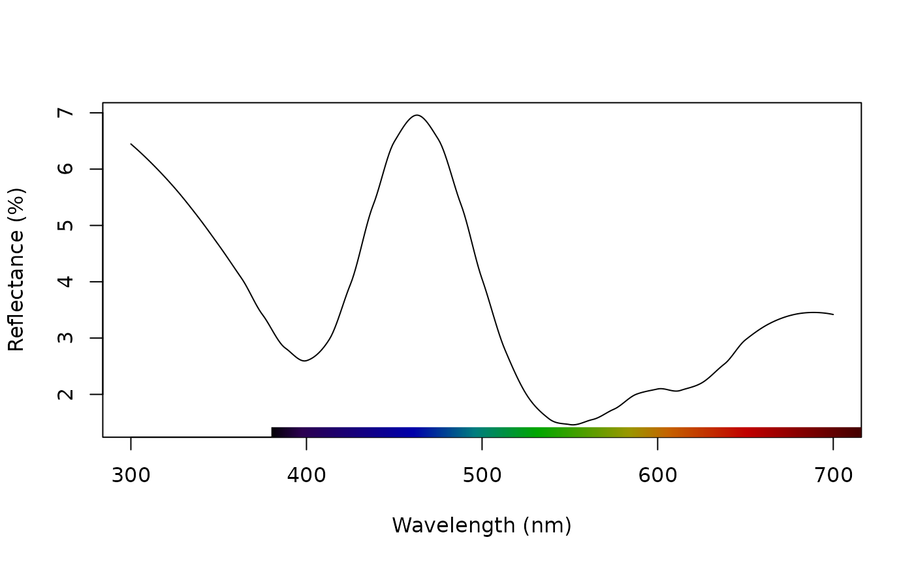
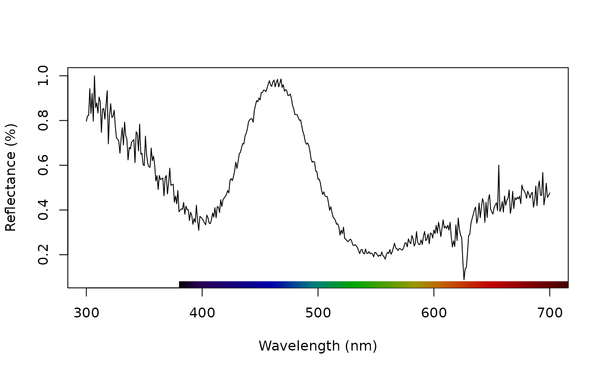

Applies normalization and/or smoothing to spectra for further analysis or plotting.
Arguments
- rspecdata
(required) a data frame, possibly of class
rspec, which contains a column containing a wavelength range, named 'wl', and spectra data in remaining columns.- opt
what type of processing options to apply. User can select multiple options by providing a vector. Possibilities are:
"none"does not perform any processing (default)."smooth"applies LOESS smoothing to each spectrum usingloess.smooth(). Optimal smoothing parameter can be assessed by usingplotsmooth()."minimum"subtracts the minimum from each individual spectra."maximum"divides each spectrum by its maximum value."sum"divides each spectrum by summed values."bin"bins each spectrum into the specified number of bins.binsargument must be set."center"centers individual spectra by subtracting mean reflectance from all values.
- fixneg
how to handle negative values. Possibilities are:
"none"does not perform negative value correction (default)."zero"sets all negative values to zero."addmin"adds the absolute value of the maximally negative values of each spectra to the reflectance at all other wavelengths (setting the minimum value to zero, but scaling other values accordingly).
- span
sets the smoothing parameter used by
loess.smooth().- bins
sets the number of equally sized wavelength bins for
opt = "bin".
References
Cuthill, I., Bennett, A. T. D., Partridge, J. & Maier, E. 1999. Plumage reflectance and the objective assessment of avian sexual dichromatism. The American Naturalist, 153, 183-200.
Montgomerie R. 2006. Analyzing colors. In Hill, G.E, and McGraw, K.J., eds. Bird Coloration. Volume 1 Mechanisms and measurements. Harvard University Press, Cambridge, Massachusetts.
White, T. E., Dalrymple, R. L., Noble D. W. A., O'Hanlon, J. C., Zurek, D. B., Umbers, K. D. L. 2015. Reproducible research in the study of biological coloration. Animal Behaviour, 106, 51-57.
Author
Chad Eliason cme16@zips.uakron.edu
Examples
data(teal)
plot(teal, select = 10)
 # Smooth data to remove noise
teal.sm <- procspec(teal, opt = "smooth", span = 0.25)
#> processing options applied:
#> smoothing spectra with a span of 0.25
plot(teal.sm, select = 10)

# Normalize to max of unity
teal.max <- procspec(teal, opt = c("max"))
#> processing options applied:
#> Scaling spectra to a maximum value of 1
plot(teal.max, select = 10)

# Smooth data to remove noise
teal.sm <- procspec(teal, opt = "smooth", span = 0.25)
#> processing options applied:
#> smoothing spectra with a span of 0.25
plot(teal.sm, select = 10)

# Normalize to max of unity
teal.max <- procspec(teal, opt = c("max"))
#> processing options applied:
#> Scaling spectra to a maximum value of 1
plot(teal.max, select = 10)
